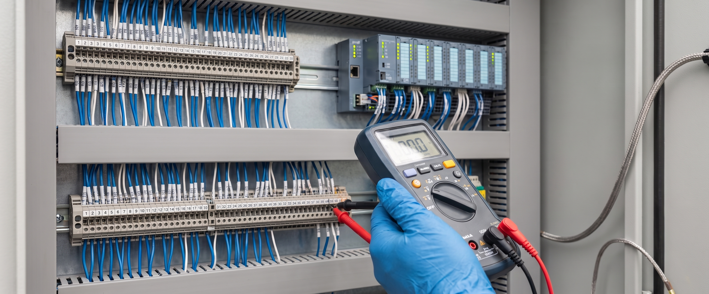
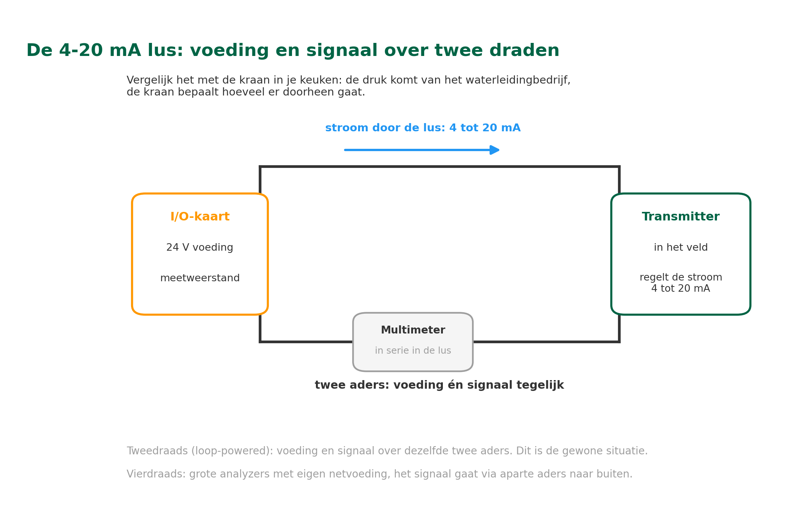
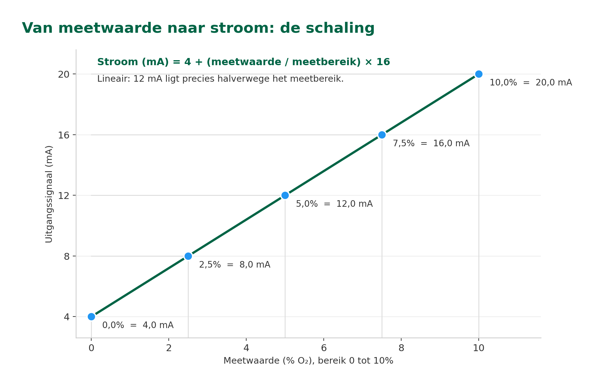
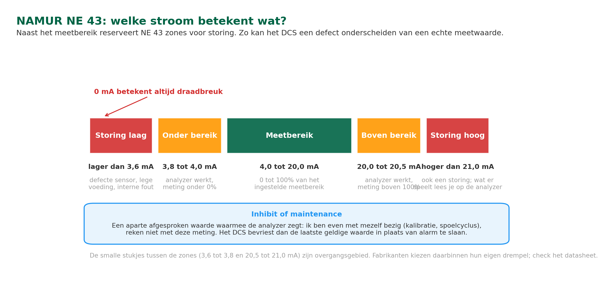
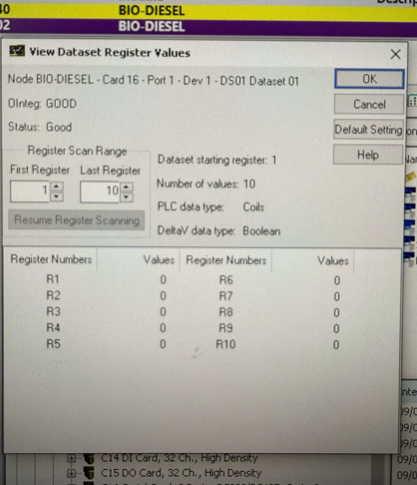
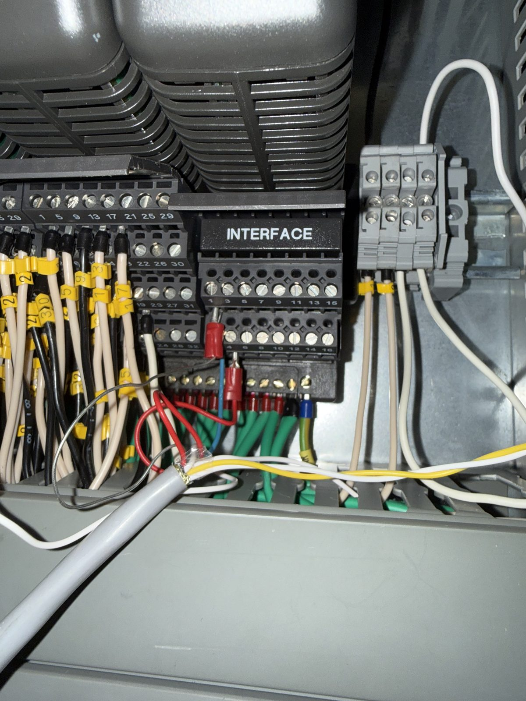
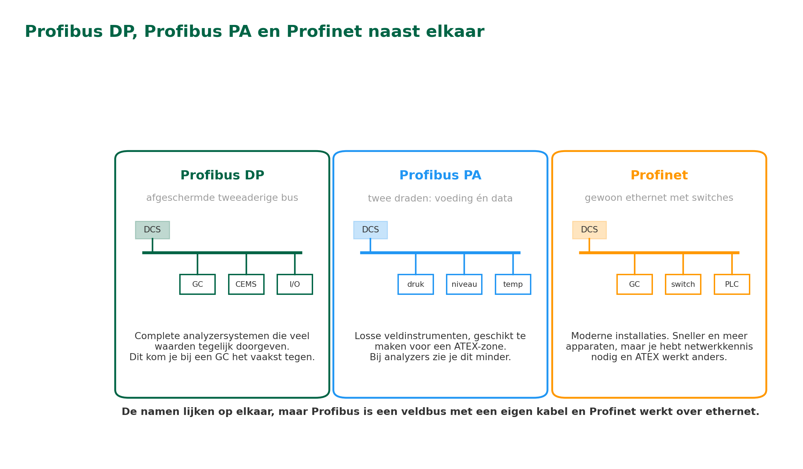

ANA – Module 4
4.1 Leerdoelen
Na het volgen van dit hoofdstuk kun je:
- Het verschil uitleggen tussen analoge en digitale signalen
- Beschrijven hoe het 4-20 mA stroomsignaal werkt en waarom het de industriestandaard is
- Uitleggen hoe NAMUR NE 43 foutsignalering op het 4-20 mA signaal werkt en waarom het belangrijk is voor analyzers
- De voordelen en de nadelen benoemen van digitale protocollen ten opzichte van analoge signalen
- Uitleggen waarom een signaal galvanisch wordt gescheiden, en welke ATEX-beschermingsmethoden je bij analyzers tegenkomt
4.2 Analoog versus digitaal: De klok als voorbeeld
Twee manieren om hetzelfde te zeggen
Kijk eens naar een klok aan de muur. Er zijn twee soorten:
- Analoge klok. De wijzers bewegen continu en vloeiend. De positie van de wijzer vertelt je de tijd. Tussen 3 uur en 4 uur zijn er oneindig veel posities. De wijzer 'glijdt' door alle tussenliggende waarden.
- Digitale klok. De cijfers springen van 15:03 naar 15:04. Er is geen tussenin: het is het ene moment of het andere. Maar de cijfers zijn heel precies en je kunt ze niet verkeerd aflezen.
In de procesindustrie werkt het precies zo:
- Analoog signaal (bijvoorbeeld 4-20 mA). De stroom verandert continu en vloeiend met de meetwaarde. Tussen 4 mA en 20 mA zijn er oneindig veel waarden mogelijk.
- Digitaal signaal (bijvoorbeeld Modbus). De meetwaarde wordt als een getal verzonden, een serie nullen en enen. Het getal is precies wat het is.
Beide methoden worden in de industrie gebruikt, elk met hun eigen sterke en zwakke punten. Als technicus kom je beide tegen.
4.3 Het 4-20 mA stroomsignaal: De industriestandaard
Waarom juist 4-20 mA?
Het 4-20 mA signaal is al tientallen jaren de standaard in de procesindustrie. Je vindt het overal: bij temperatuursensoren, druktransmitters, flowmeters én analyzers. Maar waarom juist dit bereik?
Waarom stroom (mA) in plaats van spanning (volt)?
Een stroomsignaal is veel minder gevoelig voor kabellengte en kabelweerstand. Bij een spanningssignaal veroorzaakt een lange kabel een spanningsval: hoe langer de kabel, hoe meer signaal je verliest. Bij een stroomsignaal blijft de stroom overal in het circuit gelijk, ongeacht de kabellengte. In een plant waar kabels soms honderden meters lang zijn, is dat een groot voordeel.
In het vorige hoofdstuk (Basisprincipes van industriële communicatieprotocollen) heb je gelezen dat on-line analyzers in een centraal analyzerhuis soms ver van het DCS staan. Lange kabels zijn dan onvermijdelijk. Het 4-20 mA signaal is daar goed voor, want de kabellengte heeft geen invloed op de meetwaarde. Onbeperkt is die lengte niet, en waarom niet lees je hieronder.
Twee draden, twee taken: voeding én signaal
Bij de meeste analyzers en transmitters lopen er maar twee draden naar de I/O-module, en die doen twee dingen tegelijk. Vanuit het regelsysteem staat er een gelijkspanning op de lus, meestal 24 volt. Het apparaat in het veld gebruikt die spanning om te werken, en bepaalt tegelijk hoeveel stroom er door de lus loopt: 4 mA bij de ondergrens van het meetbereik, 20 mA bij de bovengrens. Vergelijk het met de kraan in je keuken. De druk komt van het waterleidingbedrijf, en de kraan bepaalt hoeveel er doorheen gaat.
Zo’n aansluiting heet tweedraads, of loop-powered. Grotere analyzers hebben te veel elektronica om op die manier gevoed te worden. Die krijgen hun eigen netvoeding en sturen het 4-20 mA signaal via aparte aders naar buiten. Dat noem je een vierdraads uitvoering.
Voor jou als technicus verandert dat het zoekplaatje bij een storing. Meet je 0 mA op een tweedraads lus, dan hoeft de analyzer niet stuk te zijn. Er kan ook gewoon geen spanning meer op de lus staan, bijvoorbeeld door een doorgeslagen zekering of een losgetrokken klem in de marshalling kast. Controleer dus niet alleen het apparaat, maar ook of de lus nog gevoed wordt.
Hier zit ook de grens aan de kabellengte. Die 24 volt moet de weerstand van de hele lus kunnen overwinnen: de kabel heen en terug, een eventuele barrier, en de meetweerstand op de I/O-kaart. Is de lus te lang of de weerstand te hoog, dan haalt het apparaat de 20 mA aan de bovenkant van het bereik niet meer. De engineer rekent dat vooraf uit, maar het is goed om te weten waarom dat maximum bestaat.

De 4-20 mA lus: 24 V vanuit de I/O-kaart, de transmitter regelt de stroom, de multimeter meet in serie.
Waarom begint het bereik bij 4 mA en niet bij 0 mA?
Dit is het slimste aspect van het 4-20 mA signaal. Als het bereik bij 0 mA zou beginnen, zou je niet kunnen onderscheiden tussen:
- De meetwaarde is 0% (ondergrens van het meetbereik) → 0 mA
- De kabel is gebroken (draadbreuk) → ook 0 mA
Door het bereik bij 4 mA te laten beginnen, is 0 mA altijd een foutsignaal. Die ondergrens van 4 mA heet het live zero: ook bij een meetwaarde van nul loopt er nog stroom, en juist daaraan zie je dat de verbinding leeft. Als het DCS 0 mA ontvangt, weet het systeem direct: er is een draadbreuk of een defecte transmitter.
Waarom begint het 4-20 mA signaal bij 4 mA en niet bij 0 mA?
A) Omdat 0 mA dan draadbreuk betekent en geen meetwaarde
B) Omdat analyzers pas vanaf 4 mA kunnen meten
C) Omdat 4 mA de kleinste stroom is die door een kabel kan lopen
D) Omdat het DCS alleen signalen boven 4 mA kan verwerken
Hoe wordt de meetwaarde omgerekend?
De omrekening is lineair: een rechte lijn van 4 mA (= 0% van het meetbereik) naar 20 mA (= 100% van het meetbereik).
Voorbeeld: Een O₂-analyzer met meetbereik 0-10% O₂:
- 0% O₂ = 4,0 mA
- 2,5% O₂ = 8,0 mA
- 5,0% O₂ = 12,0 mA
- 7,5% O₂ = 16,0 mA
- 10,0% O₂ = 20,0 mA
De formule is: Stroom (mA) = 4 + (meetwaarde / meetbereik) × 16

De schaling is lineair: 12 mA ligt precies halverwege het meetbereik.
📖 Praktijkvoorbeeld: Troubleshooting met een multimeter
Een operator meldt dat de zuurstofmeting op zijn scherm een vaste waarde van 0,0% toont, terwijl het fornuis gewoon draait. Als technicus pak je een multimeter en meet je de stroom in de signaalkabel.
Scenario A: je meet 4,0 mA.
De kabel is intact. De analyzer stuurt 4 mA, wat overeenkomt met 0% O₂. Het probleem zit waarschijnlijk in de analyzer zelf: de meetcel, het sample conditioning systeem (Module 3), of de gasflow.
Scenario B: je meet 0,0 mA.
Er is geen stroom. Dit wijst op een draadbreuk, een defecte voeding, of een losse connector. In het DCS staat de meting dan gemarkeerd als BAD IO: het systeem weet dat dit geen geldige meetwaarde is. Je volgt de kabelroute en zoekt de onderbreking.
Scenario C: je meet 22,5 mA.
De stroom is hoger dan 20 mA (boven het bereik). Veel analyzers sturen bewust een waarde boven 20 mA als foutsignaal. Controleer de analyzer op foutmeldingen.
Dit voorbeeld laat zien waarom het 4-20 mA signaal zo krachtig is: met een simpele multimeter kun je al veel informatie over de toestand van het systeem achterhalen.
Een tweedraads (loop-powered) transmitter krijgt zijn voeding via:
A) Een eigen netvoeding bij het apparaat in het veld
B) Een aparte voedingskabel vanuit het analyzerhuis, dus vier aders
C) Dezelfde twee draden waarover het meetsignaal loopt
D) De HART-communicator die je op de lus aansluit
FOTO NOG TE MAKEN — foto 10: Multimeter in serie in een 4-20 mA lus. Een ader losgenomen en de multimeter ertussen, met een waarde in mA op het display.
4.4 NAMUR NE 43: Foutsignalering op het 4-20 mA signaal
Wat is NAMUR NE 43?
NAMUR is een Duitse gebruikersvereniging van fabrikanten en afnemers van meet- en regeltechniek in de procesindustrie (Normenarbeitsgemeinschaft für Mess- und Regeltechnik). Deze organisatie publiceert aanbevelingen die in de praktijk als standaard worden gebruikt. Eén van de bekendste is NAMUR NE 43. Deze aanbeveling beschrijft hoe een analyzer of transmitter via het 4-20 mA signaal laat weten dat er een storing is, in plaats van 'zomaar' een meetwaarde te blijven sturen.
In de vorige sectie heb je gelezen waarom het 4-20 mA signaal bij 4 mA begint: 0 mA is gereserveerd voor draadbreuk. NE 43 bouwt op dat principe voort en voegt extra foutzones toe aan beide kanten van het meetbereik, zodat het DCS niet alleen draadbreuk, maar ook sensorfouten en interne analyzerstoringen kan herkennen.
De aanbeveling werkt heel eenvoudig: naast het normale meetbereik (4-20 mA) reserveert NE 43 twee foutzones. Zakt de stroom onder ongeveer 3,6 mA of stijgt hij boven 21 mA, dan mag het DCS de waarde niet meer als meetwaarde interpreteren. Het is dan een storingsmelding.
- Normaal meetbereik: 4,0 mA tot 20,0 mA (0 tot 100% van het meetbereik)
- Storing laag (burn-out low): lager dan 3,6 mA. Dit wijst bijvoorbeeld op een defecte sensor, een lege voedingsbron of een interne fout. Sommige fabrikanten kiezen 2,0 mA of zelfs lager als foutwaarde.
- Storing hoog (burn-out high): hoger dan 21,0 mA. Ook dit is een storingsmelding. Wat er precies aan de hand is, staat niet in de stroomwaarde zelf; dat lees je af op de analyzer of in zijn foutmelding.
- Buiten bereik, maar niet defect. Tussen 3,8 en 4,0 mA en tussen 20,0 en 20,5 mA werkt de analyzer gewoon, maar zakt de meting onder of boven het ingestelde bereik. Het DCS meldt dat als een onder- of overschrijding, niet als storing.

De zones van NAMUR NE 43, met de inhibit- en maintenance-waarde erbij.
In de analysetechniek is het bijna altijd de lage foutwaarde die wordt gebruikt: een analyzer die in storing valt, zakt weg onder 3,6 mA. De hoge foutwaarde kom je vaker tegen bij gewone procesinstrumentatie, zoals temperatuurtransmitters, en daar is het meestal een instelling die je zelf kunt kiezen. Weten dat allebei bestaan is genoeg. Welke van de twee jouw analyzer gebruikt, staat in het datasheet.
Wat doet NAMUR NE 43 op het 4-20 mA signaal?
A) Het maakt het signaal digitaal zodat er meer data bij kan
B) Het reserveert stroom buiten 4-20 mA als foutsignaal
C) Het beperkt de energie in het circuit voor ATEX-zones
D) Het vervangt 4-20 mA door een variant voor aan-uitsensoren
Niet elke afwijkende waarde is een storing: inhibit en maintenance
Naast het foutsignaal heeft een analyzer nog een tweede reden om iets anders dan een meetwaarde te sturen. Is hij bezig met een kalibratie, een spoelcyclus of een zelftest, dan zegt de waarde op dat moment niets over het proces. Zou hij die gewoon doorsturen, dan ziet de operator een sprong die er niet is, en kan een regeling of een alarm onterecht aanslaan.
Daarvoor bestaat een aparte signaalwaarde, meestal aangeduid als inhibit of maintenance. De analyzer stuurt dan een afgesproken stroomwaarde, of bij een digitaal protocol een statusbit, waarmee hij laat weten: ik ben even niet beschikbaar, reken niet met deze waarde. Het DCS reageert daar anders op dan op een storing:
- Storing (NE 43). Er is iets kapot of onbetrouwbaar. Het DCS markeert de meting als slecht en geeft een alarm. Er moet iemand naar kijken.
- Inhibit of maintenance. De analyzer werkt gewoon, maar is tijdelijk met zichzelf bezig. Het DCS bevriest de laatste geldige waarde of zet de regeling in handbediening, en onderdrukt het alarm zolang de melding actief is.
Voor jou als technicus zit het verschil in de troubleshooting: een meting die vastzit hoeft geen defect te zijn, maar kan een analyzer zijn die in kalibratie staat. Of, en dat is een klassieker, een analyzer die na een onderhoudsbeurt op inhibit is blijven staan. Het werk was klaar, maar niemand heeft de melding weer uitgezet, en intussen bewaakt niemand die meting nog.
Waarom is dit belangrijk voor analyzers?
Een analyzer die een storing heeft zonder dat je het weet, is gevaarlijker dan een analyzer die helemaal niets meet. Stel: een zuurstofmeter raakt vervuild en zakt richting 0% O₂. Zonder NE 43 zou het DCS denken dat er werkelijk geen zuurstof meer in het rookgas zit, met het risico dat de operator of het regelsysteem verkeerde beslissingen neemt. Met NE 43 gaat de analyzer bij storing naar een stroom onder 3,6 mA in plaats van een 'geldig ogende' meetwaarde, en het DCS herkent dat direct als sensorfout en triggert een alarm.
Hoe wordt dit in de praktijk geconfigureerd?
NE 43 werkt alleen als twee kanten op elkaar zijn afgestemd. De analyzer moet NE 43-conform zijn en bij storing zijn stroom bewust buiten het 4-20 mA bereik sturen; het DCS moet die waarden ook als foutsignaal interpreteren in plaats van ze te schalen alsof het geldige metingen zijn.
Dit vraagt dus zowel aan de sensorkant als in het controlesysteem aandacht:
- De analyzer: check het datasheet. Ondersteunt de fabrikant NE 43 foutsignalering, en op welke exacte drempels (3,6 mA, 3,8 mA, 2,0 mA)?
- Het DCS: de I/O-module moet stromen lager dan 3,6 mA en hoger dan 21 mA markeren als BAD of FAULT, en ze niet doorrekenen naar een zogenaamde "meetwaarde" buiten bereik.
Let op bij onderhoud of vervanging
Als je een analyzer vervangt, controleer altijd of de nieuwe op dezelfde NE 43-levels is ingesteld als de oude, en dat de DCS-configuratie ongewijzigd blijft. Fabrikanten kunnen namelijk iets verschillende drempelwaarden hanteren. Komen analyzer en DCS niet overeen, dan bestaat het risico dat een echte storing als geldige meetwaarde wordt doorgegeven, met alle gevolgen voor procesbeslissingen.
NE 43 gaat over foutsignalering, niet over intrinsieke veiligheid. Voor signaalcircuits in ATEX-zones blijf je afhankelijk van de beschermingsmethoden die verderop in dit hoofdstuk aan bod komen (§4.7): IS-barriers voor eenvoudige sensoren, en purgesystemen of drukvaste behuizingen voor complete analyzers. NE 43 en deze beschermingsmethoden vullen elkaar aan: de bescherming zorgt dat het circuit veilig is in explosiegevaar, en NE 43 zorgt dat storingen zichtbaar worden voor het DCS.
4.5 Digitale protocollen: Meer dan alleen een meetwaarde
De beperkingen van analoge signalen
Het 4-20 mA signaal is robuust en betrouwbaar, maar het heeft een belangrijke beperking: je kunt maar één waarde per kabel versturen. Als je naast de meetwaarde ook de temperatuur van de meetcel, de status van het sample conditioning systeem, of een kalibratie-alarm wilt doorgeven, heb je extra kabels nodig, of een digitaal protocol.
HART: Het beste van twee werelden
HART (Highway Addressable Remote Transducer) is een slim hybride protocol dat een digitaal signaal bovenop het bestaande 4-20 mA signaal legt. Je behoudt het analoge signaal voor de primaire meetwaarde, en via het digitale kanaal kun je extra informatie meesturen:
- Diagnostische data. Sensorstatus, meetceltemperatuur, en eventuele waarschuwingen.
- Configuratieparameters. Op afstand het meetbereik, alarmen of andere instellingen aanpassen.
- Extra meetwaarden. Een tweede of derde gemeten grootheid bovenop de primaire (4-20 mA) waarde.
Het mooie is dat HART over dezelfde twee-aderige kabel werkt als het 4-20 mA signaal. Je hoeft geen nieuwe bekabeling aan te leggen. Wel is het digitale deel traag: reken op een paar waarden per seconde. Daarom blijft de belangrijkste meetwaarde altijd op het analoge signaal staan, dat direct met het proces meebeweegt.
Hoe gebruik je HART in de praktijk? Op twee manieren. Ter plaatse klem je een handheld communicator op de loop en lees je de status, de meetwaarden en de instellingen uit, zonder een kabel los te halen. Daarnaast wordt HART steeds vaker centraal uitgelezen door asset-managementsoftware (je komt namen tegen als AMS of PRM), die de diagnostiek van honderden instrumenten verzamelt en meldt welk apparaat aandacht nodig heeft voordat het uitvalt. Dat is de basis onder preventief onderhoud.
FOTO NOG TE MAKEN — foto 11: HART-communicator aangeklemd op een loop. Handheld communicator parallel op de klemmen, met een uitgelezen scherm.
Welke analyzers gebruiken HART? Veel pH-, geleidbaarheid- en zuurstof-analyzers ondersteunen HART als optie naast hun 4-20 mA uitgang. Standaard procesinstrumentatie (druk- en temperatuurtransmitters) ondersteunt het tegenwoordig bijna allemaal, dus je komt HART overal in de plant tegen.
Modbus: De universele taal
Modbus is een van de meest gebruikte digitale protocollen in de industrie. Het werkt volgens een eenvoudig master/slave-principe: het besturingssysteem (master) vraagt data op bij de analyzer (slave), en de analyzer antwoordt.
Voordelen van Modbus:
- Universeel. Wordt door vrijwel elke fabrikant van procesapparatuur ondersteund.
- Eenvoudig en bewezen. Bestaat al sinds de jaren '70 en is nog steeds robuust.
- Meervoudig. Meerdere meetwaarden en statussen via één kabelverbinding.
Waar je bij Modbus op moet letten
- Geen vaste betekenis. Modbus spreekt af hóe je data ophaalt, niet wát er op welke plek staat. Elke fabrikant kiest zelf op welk adres een meetwaarde terechtkomt. Daarom heb je altijd de Modbus mapping uit de handleiding nodig om te weten wat je uitleest.
- Status is niet vanzelfsprekend. Of er naast de meetwaarde ook een kwaliteits- of statusaanduiding meekomt, bepaalt de fabrikant. Ontbreekt die, dan kan het DCS niet zien of een getal nog vers is.
- Het DCS moet er zelf om vragen. De analyzer stuurt niet uit zichzelf. Hoe vaak het regelsysteem de waarde ophaalt, bepaalt hoe actueel de meting op het scherm is.

De Modbus mapping in het besturingssysteem: registers R1 tot R10 met hun waarden en datatype.
Welke analyzers gebruiken Modbus? Veel continue gas-analyzers, gaschromatografen en complete CEMS-systemen sturen hun data via Modbus naar het DCS.
In Module 2 heb je geleerd over gaschromatografen (GC's) die meerdere componenten tegelijk meten. Een GC moet voor elke component een concentratie doorsturen, plus diagnostiek en status. Via een 4-20 mA signaal zou je voor elke component een apart kabelpaar nodig hebben. Met Modbus of Profinet stuur je alles over één digitale verbinding: veel efficiënter voor dit soort complexe analyzers.
Profibus: de veldbus die je nog volop tegenkomt
Profibus is een oudere digitale standaard die in de procesindustrie nog overal in bedrijf is. Hij bestaat in twee smaken, en dat verschil bepaalt waar je hem tegenkomt:
- Profibus DP. Loopt over een afgeschermde tweeaderige kabel en is gemaakt om apparaten snel aan een besturingssysteem te knopen. Dit is de variant die je bij complete analyzersystemen ziet: een gaschromatograaf of een CEMS-kast die al zijn componenten, statussen en alarmen in één keer aan het DCS doorgeeft.
- Profibus PA. Bedoeld voor losse instrumenten in het veld. Over dezelfde twee draden gaan zowel de voeding als de data, net als bij een 4-20 mA lus, en de aansluiting is geschikt te maken voor gebruik in een ATEX-zone. Je komt hem tegen bij druk-, niveau- en temperatuurtransmitters, minder bij analyzers.

Waar de digitale verbinding landt: het klemmenblok met de RS-485-bedrading naar het DCS.
Profinet: De snelle verbinding
Profinet is een modern, Ethernet-gebaseerd protocol dat veel wordt gebruikt in combinatie met Siemens-besturingssystemen. Het biedt real-time communicatie en hoge snelheden, en wordt steeds vaker toegepast bij complexe analyzersystemen.
Profibus of Profinet: wat is nu het verschil? De namen lijken op elkaar, maar het zijn twee verschillende dingen. Profibus is een veldbus: een eigen kabel met een eigen manier van praten, waarbij de aangesloten apparaten netjes om de beurt aan bod komen. Profinet is de opvolger en werkt over gewoon ethernet, dezelfde soort kabels en switches als een kantoornetwerk. Daardoor is Profinet sneller, kun je er meer apparaten aan hangen en sluit het beter aan op moderne installaties. Daar staat tegenover dat je er netwerkkennis voor nodig hebt, en dat de voorzieningen voor een ATEX-zone anders geregeld moeten worden dan bij Profibus PA.
Welke analyzers gebruiken Profinet? Profinet kom je vooral tegen bij installaties met een Siemens-besturingssysteem. Een bekend voorbeeld is de Maxum II gaschromatograaf, die volledig in Profinet is geïntegreerd. Let op de naam: die analyzer is bij Siemens ontwikkeld, maar de procesgaschromatografie-tak is in 2024 overgegaan naar Valmet. Je komt hem dus onder beide namen tegen, en in Hoofdstuk 2 heet hij daarom Valmet Maxum II. Andere fabrikanten ondersteunen Profinet ook als optionele koppeling, maar de combinatie Siemens-besturingssysteem en Profinet kom je in de praktijk het vaakst tegen.
Wat kom jij hiervan in de praktijk tegen? Voor de analyzer-technicus komt het op twee dingen neer. Een complete analyzer die veel waarden tegelijk doorgeeft, zoals een gaschromatograaf of een CEMS-systeem, hangt meestal via Modbus, Profibus DP of Profinet aan het DCS; welke van de drie hangt af van het merk en de leeftijd van de installatie. Een losse transmitter in het veld doet vrijwel altijd 4-20 mA, al dan niet met HART erbovenop. Er bestaan nog meer protocollen, zoals Foundation Fieldbus, maar die kom je bij analyzers zelden tegen. Het is genoeg om te weten dat ze bestaan.

Profibus DP, Profibus PA en Profinet naast elkaar, met wat je er in de praktijk van tegenkomt.
Wat is het belangrijkste verschil tussen Profibus en Profinet?
A) Profibus is analoog, Profinet is digitaal en sneller
B) Profibus werkt alleen bij Siemens, Profinet bij alle merken
C) Profibus heeft een eigen kabel, Profinet loopt over ethernet
D) Profinet kan maar een meetwaarde tegelijk versturen
Status- en kwaliteits-meldingen: meer dan alleen het getal
In Hoofdstuk 1 (§1.7) heb je gelezen dat een meetwaarde alleen betrouwbaar is als de signalen eromheen ook in orde zijn: sample-flow, temperatuur, status van de analyzer. De vraag is dan: hoe komen die signalen eigenlijk bij het DCS terecht? Dat hangt af van het protocol.
- 4-20 mA en NAMUR NE 43: het signaal vertelt het DCS alléén of de analyzer zelf in storing is (stroom onder 3,6 mA of boven 21 mA). Wil je ook weten of de sample-flow goed is, dan heb je daar een aparte kabel of een digitaal protocol naast nodig.
- HART: naast de hoofdmeetwaarde stuurt de analyzer een device-status mee, plus tot drie extra meetwaarden (zoals celtemperatuur of sample-flow). Met een HART-communicator lees je die er zo uit.
- Modbus en Profinet: voor elke meetwaarde is meestal een aparte status- of kwaliteits-aanduiding beschikbaar in een eigen register. Het DCS leest die er bij en kan op basis daarvan de meetwaarde markeren als geldig, verdacht of ongeldig.
In de praktijk is dit precies waarom complexe analyzers (zoals gaschromatografen of CEMS-systemen) bij voorkeur via een digitaal protocol worden aangesloten: de meetwaarde en de bijbehorende status komen dan samen aan in het DCS, in plaats van verspreid over losse kabels.
Dat betekent niet dat alle diagnostiek naar het DCS moet. De tendens is juist om het operatorscherm rustig te houden: daar hoort wat de operator nodig heeft om het proces te sturen, dus de meetwaarde en een duidelijke aanduiding of die geldig, verdacht of ongeldig is. De uitgebreide diagnostiek, zoals celtemperaturen, tellerstanden en waarschuwingen over aankomend onderhoud, gaat naar het asset-managementsysteem van de onderhoudsafdeling. Overlaad je de operator met meldingen waar hij niets mee kan, dan gaat hij ze wegklikken, en dan mist hij juist de melding die er wel toe doet.
4.6 Analoog versus digitaal: Een vergelijking
Wanneer kies je wat? Bij vrijwel elk modern analyzersysteem heb je iets te kiezen tussen analoog en digitaal, of een combinatie. De volgende tabel zet de belangrijkste verschillen op een rij, zodat je snel kunt zien waar elk type sterk in is en waar je moet opletten.
| 4-20 mA | HART | Modbus, Profibus of Profinet | |
|---|---|---|---|
| Wat gaat er over de kabel | Eén meetwaarde | Eén meetwaarde plus digitale extra’s | Alle meetwaarden, statussen en diagnostiek |
| Bekabeling | Twee aders per meting | Twee aders, dezelfde als 4-20 mA | Eén kabel voor meerdere apparaten |
| Snelheid | Continu en direct | Analoog direct, digitale laag traag | Snel, afhankelijk van het netwerk |
| Hoe meldt het een storing | NAMUR NE 43 op het stroomsignaal | NE 43 plus een device-status | Status per meetwaarde in een eigen register |
| Verbinding valt weg | 0 mA, meteen zichtbaar | 0 mA, meteen zichtbaar | Hangt van de instelling af; kan als bevroren waarde blijven staan |
| Waarmee lees je het uit | Multimeter | HART-communicator | Laptop met de juiste software, plus de mapping van het apparaat |
| In een ATEX-zone | Eenvoudig intrinsiek veilig te maken (Ex i) | Zelfde lus, dus dezelfde barrier | Vraagt aparte voorzieningen |
| Wie lost een probleem op | Jijzelf | Jijzelf | Vaak samen met de DCS- of automation-specialist |
In de praktijk zie je vaak een combinatie: analoge 4-20 mA signalen voor de primaire meetwaarden (betrouwbaar, eenvoudig) en digitale protocollen voor diagnostiek en configuratie. De keuze hangt af van de installatie, de beschikbare infrastructuur en de complexiteit van het analyzersysteem.
In de praktijk: hoe controleer je elk signaaltype?
Stel: er komt een melding dat een meetwaarde 'bevroren' is of rare sprongen maakt. Lokaal bij de analyzer is alles in orde. Dan ga je op de signaalweg zoeken. Welk gereedschap je daarbij gebruikt, hangt af van het signaaltype:
- 4-20 mA stroomsignaal. Een gewone digitale multimeter. Je 'breekt de loop open' door een ader van de signaalkabel los te maken en je multimeter in serie ertussen te plaatsen, zodat de stroom dwars door de meter loopt. Met de scenario's uit §4.3 (4 mA, 0 mA, > 20 mA) zie je snel waar het probleem zit.
- HART. Een HART-communicator (zoals Emerson 475 of Rosemount Trex) sluit je parallel aan op de loop, dus zonder kabel los te maken. Je leest sensorstatus en alarmen uit en kunt zelfs het meetbereik aanpassen zonder via het DCS te hoeven.
- Modbus. Een laptop of tablet met Modbus-poll-software (Modbus Poll, Modbus Tester) leest de slave (de analyzer) uit. Aansluiten op de seriële lijn (RS-485) of via Ethernet bij Modbus TCP. Tools zijn vaak gratis, maar je hebt wel de Modbus mapping van het apparaat nodig: de lijst met registeradressen waarin staat welke meetwaarde of status op welk adres te vinden is. Die vind je in de handleiding van de analyzer.
- Profinet. Voor basis-checks (link up, IP-adres bereikbaar) is een laptop of Ethernet-tester voldoende. Voor diepere diagnose gebruik je een netwerk-sniffer als Wireshark. Hier werk je vaak samen met de DCS-engineer of automation-specialist.
Werk je in een hazardous area (ATEX-zone)? Regel altijd een werkvergunning vóór je een kabel opent, een behuizing losdraait of meetapparatuur aansluit. Gebruik intrinsiek veilige testtools waar dat verplicht is; wat die aanduiding Ex i precies betekent, lees je in §4.7. Veel installaties hebben in de marshalling kast (in een safe area) test-aansluitingen waar je veilig kunt meten zonder iets in het veld los te halen.
Vuistregel: wat je zelf met multimeter of HART-communicator kunt oplossen, doe je zelf. Voor Modbus en Profinet betrek je vaak een DCS- of automation-specialist erbij, omdat de netwerkconfiguratie en datadefinities meestal door dat team worden beheerd. Goed weten wie je waarvoor moet bellen is hier net zo belangrijk als zelf met meetgereedschap kunnen werken.
4.7 Galvanische scheiding en veiligheid
Waarom je signalen moet isoleren
In de procesindustrie lopen signaalkabels soms honderden meters door de plant. Die kabels lopen langs elektromotoren, hoogspanningskabels en andere bronnen van elektrische storing. Bovendien kunnen er potentiaalverschillen bestaan tussen de aarding van de analyzer en de aarding van het DCS.
Zonder bescherming kan dit leiden tot:
- Meetfouten. Door aardlussen (ground loops): het signaal wordt verstoord door ongewenste stromen tussen verschillende aardpunten in de plant.
- Schade aan elektronica. Door overspanning vanuit het veld, bijvoorbeeld bij een storing op de hoogspanning of een blikseminslag in de buurt. Ook de ingangen van het DCS lopen risico: een te hoog potentiaalverschil tussen twee aardpunten kan de I/O-kaart beschadigen.
- Veiligheidsrisico's. In ATEX-zones (explosiegevaarlijke omgevingen) kan een elektrische vonk een gasmengsel ontsteken.
De oplossing is galvanische scheiding: het elektrisch isoleren van twee circuits terwijl het signaal wel wordt doorgelaten. Dit gebeurt met isolatieversterkers of barriers die het signaal overbrengen via licht (optokoppeling) of magnetisch (transformator), zonder directe elektrische verbinding.
Intrinsieke veiligheid (IS): de link met ATEX
In Module 1 heb je twee dingen geleerd die hier samenkomen. In Hoofdstuk 3 ging het over ATEX-zones, gasgroepen en temperatuurclassificaties, en over de beschermingsmethoden waarmee apparatuur in zo'n zone wordt gemarkeerd (zoals Ex i voor intrinsiek veilig, Ex d voor drukvaste behuizingen, en signaal barriers tussen veilige en explosiegevaarlijke zones). In Hoofdstuk 1 ging het over purgesystemen die het analyzerhuis met overdruk beschermen tegen het binnendringen van brandbare of giftige stoffen. In dit hoofdstuk kijken we wat dit betekent voor de signaalweg: het signaal van een analyzer in een ATEX-zone mag niet teveel energie bevatten om een explosie te veroorzaken.
Op de markering van een apparaat staat vaak nog een letter achter de i, zoals Ex ia of Ex ib. Die letter geeft aan hoe streng het beschermingsniveau is en in welke zone het apparaat mag hangen. Voor het volgen van de signaalweg maakt dat verschil niet uit, dus houden we het hier op de verzamelnaam Ex i.
FOTO NOG TE MAKEN — foto 15: ATEX-typeplaatje met leesbare Ex-codering. Typeplaatje van de GC of een sensor, scherp genoeg om bijvoorbeeld Ex d IIB T4 te lezen.
Let op: Ex i is niet de enige veilige oplossing, en ook niet automatisch de beste. Het is een van de manieren om een signaalcircuit aan een beschermingswijze te laten voldoen. Welke methode je tegenkomt, ligt bovendien vaak al vast door de installatie zelf. Ligt er intrinsiek veilige infrastructuur (IS-kaarten in het DCS, eigen kabelgoten en klemmenstroken), dan sluit je daarop aan, ook als een andere methode technisch ook had gekund.
Dit wordt bereikt met IS-barriers (Intrinsic Safety barriers). Een IS-barrier beperkt de maximale energie in de kabel naar de sensor, zodat er zelfs bij een kortsluiting niet genoeg energie vrijkomt om een explosief mengsel te ontsteken.
Een barrier plaatsen is op zichzelf niet genoeg. Intrinsieke veiligheid geldt voor de hele lus, niet voor een los onderdeel. Ook de kabel telt mee (type, doorsnede en vooral de lengte, want een lange kabel slaat meer energie op) en het aangesloten instrument moet zelf een passend certificaat hebben. De engineer rekent die lus door en legt de uitkomst vast in de loop-documentatie. Vervang je in het veld een instrument door een ander type, of verleng je een kabel, dan klopt die berekening niet meer en is de lus niet langer automatisch veilig.
Als je werkt aan signaalbekabeling in een ATEX-zone, controleer altijd of de juiste IS-barriers zijn geïnstalleerd. Het verwisselen of overbruggen van een barrier kan een direct explosiegevaar opleveren.
Welke beveiliging waar? IS-barrier is niet de enige optie
IS-barriers zijn één van de manieren om apparatuur in een ATEX-zone veilig te houden, maar niet de enige. In Module 1 ben je verschillende beschermingsmethoden tegengekomen (Ex i, Ex d, signaal barriers, purgesystemen (Ex p) en verhoogde veiligheid (Ex e)). Welke methode je in de praktijk bij analyzers ziet, hangt af van het type apparaat en van de certificering die voor die plek is vastgelegd.
- IS-barriers met 4-20 mA loop (Ex i). In Module 1 zag je deze terug onder de term 'signaal barriers'. Het is de standaardoplossing voor eenvoudige sensoren in een hazardous area: een pH-sensor in een procesleiding, een druktransmitter, een niveau-schakelaar of een proximity switch op een klep. De transmitter krijgt via de barrier zo weinig energie dat hij ook bij kortsluiting geen ontsteking kan veroorzaken. Dit is de Ex i-methode die in Module 1 (Hoofdstuk 3) is besproken.
- Purged enclosure (Ex p). Voor complete analyzers met veel elektronica, zoals een gaschromatograaf, een massaspectrometer of een FTIR, is energie-beperken via een loop niet werkbaar. Hier wordt het purgesysteem gebruikt dat je in Module 1 (Hoofdstuk 1) hebt leren kennen: het hele apparaat, of vaak het hele analyzerhuis, wordt onder lichte overdruk gehouden met schone lucht. Zolang er overdruk is, kan er geen explosief gasmengsel binnenkomen. Stikstof wordt daar niet meer voor gebruikt: lekt dat weg in het analyzerhuis, dan levert het verstikkingsgevaar op voor wie daar werkt. Wat er bij verlies van overdruk gebeurt, hangt af van de zone: in zone 1 schakelt de voeding automatisch af, in zone 2 volstaat een alarm zodat de operator of technicus kan ingrijpen.
- Flameproof enclosure (Ex d). De drukvaste behuizing die je in Module 1 (Hoofdstuk 3) onder Ex d hebt gezien: een eventuele interne explosie blijft opgesloten in de kast en kan niet naar buiten slaan. Dit zie je vaker bij elektromotoren of verlichting in een ATEX-zone dan bij analyzers, maar je komt het tegen.
Voorbeeld. Een drukvaste behuizing (Ex d) om de meetcel van een cloudpoint analyzer, hier met de deksel open. Let op de zware flensrand: die smalle spleet moet de hete gassen van een interne explosie zover afkoelen dat er buiten de kast niets meer kan ontsteken. Daarom is het aandraaikoppel van de bouten geen detail.
- Verhoogde veiligheid (Ex e). Hier is de apparatuur zo uitgevoerd dat er in normaal bedrijf helemaal geen vonken of hete oppervlakken kunnen ontstaan: ruime kruip- en luchtafstanden, klemmen die niet los kunnen trillen, en een goed afgedichte behuizing. Je komt Ex e vooral tegen bij aansluit- en klemmenkasten in het veld, ook bij analyzersystemen.
Welke combinatie er precies wordt toegepast, kiest de engineer al bij het ontwerp. Als technicus moet je herkennen welk type beveiliging er staat, want bij onderhoud verschilt de procedure. Een IS-barrier mag je niet overbruggen, een purged enclosure mag je niet openen zonder de purge volgens voorschrift te onderbreken, en bij een flameproof behuizing moeten de bouten terug op het juiste aandraaikoppel om de spleten binnen specificatie te houden. Bij een Ex e-kast zet je alle klemmen en wartels weer correct vast.